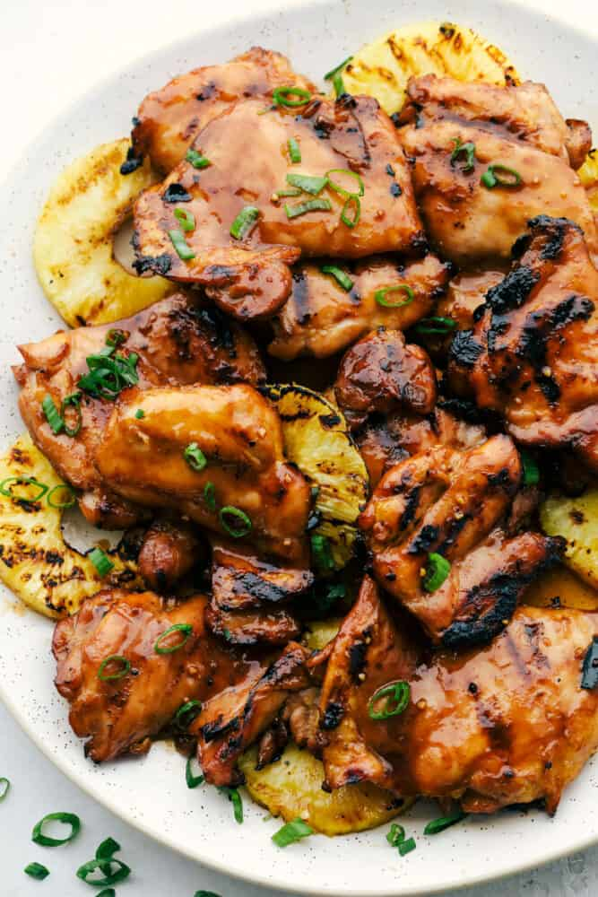

Huli Huli Chicken

Description
Huli Huli Chicken is a Hawaiian Chicken recipe marinaded in pineapple juice,
ketchup, garlic, chicken broth and brown sugar. It is best grilled on a BBQ.
Ingredients
- Boneless Skinless Chicken Thighs
- Unsweetened Pineapple Juice
- Soy Sauce
- Brown Sugar
- Ketchup
- Chicken Broth
- Fresh Ginger Root Grated
- Minced Garlic
- Green Onions
Steps
-
In a medium sized bowl, whisk together pineapple juice, soy sauce, brown sugar,
ketchup, chicken broth, ginger and garlic. Reserve 1 cup sauce for basting.
Add the chicken thighs and sauce to a ziplock bag and marinate at least 3 hours
or overnight.
-
Grill chicken, covered, over medium heat for 6-8 minutes on each side or until
no longer pink. Baste occasionally with reserved marinade during the last 5 minutes.
Garnish with green onions if desired.